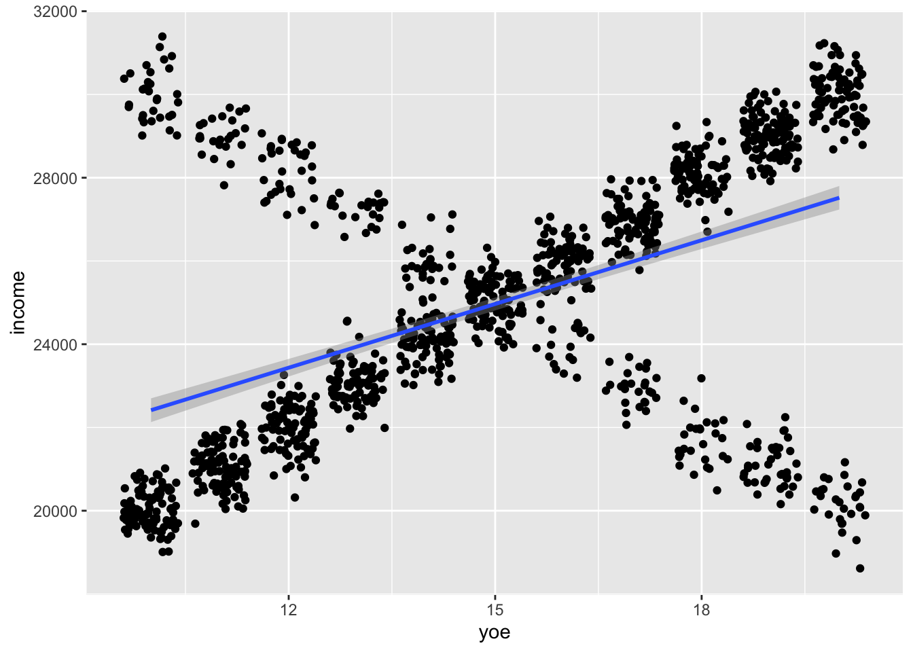

Main effects and interactions
We will continue the example using the “countries” data set and regressing life expectancy on democratic index and share of people with university degree.
fit1 <- lm(life_exp ~ dem_index + uni_prc, data = countries)
summary (fit1)##
## Call:
## lm(formula = life_exp ~ dem_index + uni_prc, data = countries)
##
## Residuals:
## Min 1Q Median 3Q Max
## -4.1640 -0.9798 -0.0910 1.4256 3.1522
##
## Coefficients:
## Estimate Std. Error t value Pr(>|t|)
## (Intercept) 66.300 2.210 30.003 < 2e-16 ***
## dem_index 1.786 0.415 4.303 0.000149 ***
## uni_prc -1.460 6.548 -0.223 0.824979
## ---
## Signif. codes: 0 '***' 0.001 '**' 0.01 '*' 0.05 '.' 0.1 ' ' 1
##
## Residual standard error: 1.949 on 32 degrees of freedom
## (3 observations deleted due to missingness)
## Multiple R-squared: 0.5517, Adjusted R-squared: 0.5237
## F-statistic: 19.69 on 2 and 32 DF, p-value: 2.664e-06All the beta coefficients in the table above are so called main effects. We use this term to distinguish them from interactions. Let’s briefly stop on the term main effects before we proceed to interactions. There are two types of main effects. First, in simple linear regression, the main effect indicates the bivariate linear association between independent and dependent variable. Second, in MLR, the main effect is the conditional effect described in the previous lecture (i.e., the effect of an independent variable on a dependent variable conditional on all other variables in the model being held constant).
Using only the main effects in MLR relies on the assumption that the effect of a given independent variable on the dependent variable is the same across all levels of other independent variables in the model, or more precisely, that rather than looking at different effects of our independent variable of interest (e.g. democratic index) for different levels of other independent variables (e.g. proportion of people with a degree), it is an acceptable simplification to take the average effect. When we do this, it is important to be aware of it. Maybe democratic index has different effect on life expectancy for countries with low proportion of university educated people and different effect for countries with high proportion of university educated people, but we would not be able to find out from the model above.
In a model with just two predictors, such as ours, it is simple to check the assumption by adding the interaction term in the model. Either, we can use a syntax with an asterix, which includes both main effects and interactions. Alternatively, we can use syntax with a colon which only calls the interaction term, so we also need to call each of the main effects separately. The two models below are identical.
fit2 <- lm(life_exp ~ dem_index*uni_prc, data = countries)
fit3 <- lm(life_exp ~ dem_index + uni_prc + dem_index:uni_prc, data = countries)
summary (fit3)##
## Call:
## lm(formula = life_exp ~ dem_index + uni_prc + dem_index:uni_prc,
## data = countries)
##
## Residuals:
## Min 1Q Median 3Q Max
## -4.1316 -1.0089 -0.0921 1.4309 3.1746
##
## Coefficients:
## Estimate Std. Error t value Pr(>|t|)
## (Intercept) 66.937 8.236 8.127 3.53e-09 ***
## dem_index 1.702 1.124 1.514 0.140
## uni_prc -3.967 31.908 -0.124 0.902
## dem_index:uni_prc 0.319 3.971 0.080 0.936
## ---
## Signif. codes: 0 '***' 0.001 '**' 0.01 '*' 0.05 '.' 0.1 ' ' 1
##
## Residual standard error: 1.98 on 31 degrees of freedom
## (3 observations deleted due to missingness)
## Multiple R-squared: 0.5518, Adjusted R-squared: 0.5084
## F-statistic: 12.72 on 3 and 31 DF, p-value: 1.372e-05For now, we will only briefly notice the fact that none of the predictors is suddenly significant. Interactions require large samples (we discuss this below) and including an interaction in a model ran on just 38 observations inflates standard errors. In addition, there are issues with interpreting main effects once interactions are included (also discussed below). But we can interpret the interaction term: it is extremely low compared to its standard error. This does not necessarily say we can safely ignore the interaction and only focus on the main effect. Rather, it says that if the effect of the interaction exists, it is too slow to reliably detect with our sample size. In other words, we don’t have the data to focus on other than the average effect, i.e., the main effect. Or yet in other words, we fail to reject the null hypothesis about the 0 size of the interaction, so we leave it out of the model.
Illustrating interactions with a simulated example (a crazy one)
But what does it look like when we have enough data and interactions are significant? We will illustrate it with a very unrealistic, but hopefully illustrative example,
Imagine we want to model the effect of years of education on earnings and we also enter gender into the model (we assume it only takes two values, “man” or “woman”). To make things easier, we will make ourselves fully in control by simulating our own data which will comply with the following assumptions (we know, very unrealistic assumption, but train your imagination with us :))
- Men make LESS money with every year of education they get
- Women make MORE money with every year of education they get
- The strength of the relationship is the same for both genders, only reverse in its direction
- There is about the same number of men in women in the population
- Each person can have 10, 11, … 20 years of education and each category has the same size
- Gender and number of years of education are independent
Based on these assumptions, we can simulate some data:
# gender - simulate 1000 women and 1000 men
gender <- c(rep("woman", 1000), rep("man", 1000))
# save total number of observations
n <- length(gender)
# generate years of education
set.seed(42)
yoe <- sample(10:20, n, replace = TRUE)
# generate income
# income for women
intercept_w <- 10000
beta_yoe_w <- 1000
sigma_w <- 500
income_w <- intercept_w + beta_yoe_w*yoe[1:(n/2)] + sigma_w*rnorm(n/2)
# income for men
intercept_m <- 40000
beta_yoe_m <- -1000
sigma_m <- 500
income_m <- intercept_m + beta_yoe_m*yoe[((n/2)+1):n] + sigma_m*rnorm(n/2)
income <- c(income_w, income_m)
# bind to data frame
df <- data.frame(gender, yoe, income)Now, imagine we want predict income with years of education and gender and we only include main effecs (i.e., we assume that the linear association between the two continuous variables is the same for both genders or close enough that we can ignore the difference). We use the following model:
\[ earnings = \beta_0 + \beta_1*yearsOfEducation + \beta_2*gender \]
In R, it is:
fit1 <- lm(income ~ yoe + gender, data = df)
summary(fit1)##
## Call:
## lm(formula = income ~ yoe + gender, data = df)
##
## Residuals:
## Min 1Q Median 3Q Max
## -6398.8 -2919.4 42.5 2915.2 6311.0
##
## Coefficients:
## Estimate Std. Error t value Pr(>|t|)
## (Intercept) 25149.218 353.781 71.087 <2e-16 ***
## yoe -6.778 22.624 -0.300 0.765
## genderwoman -26.121 146.504 -0.178 0.859
## ---
## Signif. codes: 0 '***' 0.001 '**' 0.01 '*' 0.05 '.' 0.1 ' ' 1
##
## Residual standard error: 3276 on 1997 degrees of freedom
## Multiple R-squared: 6.119e-05, Adjusted R-squared: -0.0009403
## F-statistic: 0.0611 on 2 and 1997 DF, p-value: 0.9407The interpretation of this model would be straightforward: Expected income for a man with 0 years of education is 25 149 CZK. For women, the number is almost identical (small estimate of the difference and large standard-errors indicate no difference between men and women), so gender does not seem to matter. Years of education do not do any difference.
However, we know that there actually are fairly strong associations in the data, we simulated them. The problem is that by only considering main effects, we got the average effect in which the associations cancel out, as visualized below:
df %>% ggplot(aes(y = income, x = yoe)) + geom_point() + geom_smooth(method = "lm")What we need to do to capture the different relationship between years of education and income for each gender is to include interaction. Visually this will look like this (we allow for different regression slopes for both genders).
df %>% ggplot(aes(y = income, x = yoe, color = gender)) +
geom_point() +
geom_smooth(method = "lm")This means our model will look like this:
\[ income = \beta_0 + \beta_1*yearsOfEducation + \beta_2*gender + \beta_3*yearsOfEducation*gender \]
To run and explore it in R, we write the following code:
fit2 <- lm(income ~ yoe*gender, data = df)
summary(fit2)##
## Call:
## lm(formula = income ~ yoe * gender, data = df)
##
## Residuals:
## Min 1Q Median 3Q Max
## -1716.62 -340.04 9.16 340.62 1663.25
##
## Coefficients:
## Estimate Std. Error t value Pr(>|t|)
## (Intercept) 39994.735 74.920 533.8 <2e-16 ***
## yoe -999.656 4.897 -204.2 <2e-16 ***
## genderwoman -29942.272 106.404 -281.4 <2e-16 ***
## yoe:genderwoman 1998.123 6.946 287.7 <2e-16 ***
## ---
## Signif. codes: 0 '***' 0.001 '**' 0.01 '*' 0.05 '.' 0.1 ' ' 1
##
## Residual standard error: 502.9 on 1996 degrees of freedom
## Multiple R-squared: 0.9764, Adjusted R-squared: 0.9764
## F-statistic: 2.758e+04 on 3 and 1996 DF, p-value: < 2.2e-16Suddenly, things have changed significantly. The intercept is now interpreted as expected income for a man with 0 years of education. That is the 40000 we entered in the simulation. The beta of years of education (ca -1000) is the slope for men (i.e. when comparing two men who differ by one 1 of education, we expect the one with more education have 1000 less income). Subtracting the beta for women from the intercept will give as the 10000 simulated for women with 0 years of education. Finally, the beta for the interaction (ca 2000) says how the effect of education on income will differ for women. For example, if you are a woman with 12 year of education, your expected income is ca 22 000. Note that you still get the 1000 per year of education penalty, but it is outweighed by the 2000 per year education bonus for women (the interaction term).
\[ 39994 - 29942 - 999*12 + 1998*12*1 = 39994 - 29942 - 11988 + 23976 = 22040 \] This model with interaction is obviously a much better way to describe our data, but there are some issues. The value of intercept corresponds to 0 years of education, an unrealistic value which is not at all present in our data. There is another issue: the main effect of years of education is strong and negative, while we see the overall (average) effect in our data is 0. In more complicated situations, this can be confusing and the main effect is impossible to interpret in itself. Both these issues can be addressed with centering of predictors.
Centering variables in models with interactions
We saw above that some of the interpretations of main effects can be difficult or not very useful when models contain interactions. However, we can use centering for better interpretability of main effects:
# center predictors
df <-
df %>% mutate(yoe_c = yoe - mean(yoe),
gender_w = ifelse(gender == "woman", 1, 0),
gender_c = gender_w - mean(gender_w))
# run model
fit3 <- lm(income ~ yoe_c*gender_c, data = df)
summary(fit3)##
## Call:
## lm(formula = income ~ yoe_c * gender_c, data = df)
##
## Residuals:
## Min 1Q Median 3Q Max
## -1716.62 -340.04 9.16 340.62 1663.25
##
## Coefficients:
## Estimate Std. Error t value Pr(>|t|)
## (Intercept) 25014.6997 11.2450 2224.516 <2e-16 ***
## yoe_c -0.5944 3.4731 -0.171 0.864
## gender_c -26.3686 22.4900 -1.172 0.241
## yoe_c:gender_c 1998.1234 6.9463 287.655 <2e-16 ***
## ---
## Signif. codes: 0 '***' 0.001 '**' 0.01 '*' 0.05 '.' 0.1 ' ' 1
##
## Residual standard error: 502.9 on 1996 degrees of freedom
## Multiple R-squared: 0.9764, Adjusted R-squared: 0.9764
## F-statistic: 2.758e+04 on 3 and 1996 DF, p-value: < 2.2e-16Now, the intercept shows the expected income for the average gender with mean years of education. More importantly, the main effects have a more meaningful interpretation: the 0 value for years of education indicates the average effect of years of education on income. The interaction is unchanged, but remember that the data has been transformed (centered), so the value of gender for women is now 0.5 and for men -0.5. It is these number that we have to multiply with the beta for interaction to get our expectations.
Added value of centering in models with interactions
We already knew from earlier that centering helps to give the intercept some meaningful interpretation. In case of models with interactions, it also helps give the main effects some meaningful interpretation. Imagine we continue our simulated example, but this time, there are still 1000 women in our sample, but only 300 men. When running the analysis with non-centred predictors, nothing much changed in the output table compared to the model on the full sample. Actually, the results are nearly identical, only the degrees of freedom differ (they are function of the sample size):
# we only take the first 1300 observations, i.e., 1000 women and 300 men, and we repeat the centering.
df_part <-
df %>%
slice(1:1300) %>%
mutate(yoe_c = yoe - mean(yoe),
gender_w = ifelse(gender == "woman", 1, 0),
gender_c = gender_w - mean(gender_w))
fit4 <- lm(income ~ yoe*gender, data = df_part)
summary(fit4)##
## Call:
## lm(formula = income ~ yoe * gender, data = df_part)
##
## Residuals:
## Min 1Q Median 3Q Max
## -1716.62 -339.32 9.02 349.14 1529.84
##
## Coefficients:
## Estimate Std. Error t value Pr(>|t|)
## (Intercept) 40119.822 134.377 298.6 <2e-16 ***
## yoe -1005.691 8.649 -116.3 <2e-16 ***
## genderwoman -30067.360 153.979 -195.3 <2e-16 ***
## yoe:genderwoman 2004.158 9.942 201.6 <2e-16 ***
## ---
## Signif. codes: 0 '***' 0.001 '**' 0.01 '*' 0.05 '.' 0.1 ' ' 1
##
## Residual standard error: 500.4 on 1296 degrees of freedom
## Multiple R-squared: 0.977, Adjusted R-squared: 0.9769
## F-statistic: 1.834e+04 on 3 and 1296 DF, p-value: < 2.2e-16Next, we run the same model on centered data. As a result of centering, the main effect receives different interpretation: it is the average slope of the linear relationship of years of education and income, reflecting the bigger proportion of women in our sample:
fit5 <- lm(income ~ yoe_c*gender_c, data = df_part)
summary(fit5)##
## Call:
## lm(formula = income ~ yoe_c * gender_c, data = df_part)
##
## Residuals:
## Min 1Q Median 3Q Max
## -1716.62 -339.32 9.02 349.14 1529.84
##
## Coefficients:
## Estimate Std. Error t value Pr(>|t|)
## (Intercept) 25048.765 13.882 1804.454 <2e-16 ***
## yoe_c 535.969 4.267 125.617 <2e-16 ***
## gender_c 62.841 32.962 1.907 0.0568 .
## yoe_c:gender_c 2004.158 9.942 201.589 <2e-16 ***
## ---
## Signif. codes: 0 '***' 0.001 '**' 0.01 '*' 0.05 '.' 0.1 ' ' 1
##
## Residual standard error: 500.4 on 1296 degrees of freedom
## Multiple R-squared: 0.977, Adjusted R-squared: 0.9769
## F-statistic: 1.834e+04 on 3 and 1296 DF, p-value: < 2.2e-16Visually, we still see the opposite relationships in the two sub-samples, but the average effect is more strongly influenced by the bigger group. If we are interested in the average effect and also the sub-group effects, centering is a useful tool to read them both from one model specification.
df_part %>% ggplot(aes(x=yoe, y=income)) + geom_jitter() + geom_smooth(method = "lm")
Model with interaction VS. two separate models
If we are interested in an interaction between two continuous variables, we have no other option than running a model with an interaction. However, when we are interested in an interaction between one continuous and one binary variable, we could also be tempted to run two separate models, one for men and one for women. This would not be a horrible solution. The estimated effected sizes would be the same. However, we would not be able to calculate the overall fit of the model (we will talk about model fit in one of the next lectures), and we would not have the estimate of standard error of the difference of slopes between men and women. So unlike in the model with interaction, we would not be able to say if the difference in slope between the two genders is statistically significant.
Interaction as “it depends effects”
Jim Frost offers in his blog a helpful way to think about interactions as of “it depends effects.” If the answer to the question ‘What is the effect of X on Y?’ is ‘It depends,’ we are dealing with interactions. From the perspective of explanatory models, interactions are the usual way to deal with the so called moderators (see discussion of confiders, colliders, mediators, and moderators elsewhere in this course).
Interactions require big samples
Adding interactions sometimes makes good sense theoretically, and sometimes it also helps achieve good model specification with good fit to the data. However, estimating interactions requires much bigger samples to identify the same effect size compared to just the main effect. And since we can mostly assume that the effect size of interactions will be smaller than that of main effects, we will mostly require MUCH bigger samples. In his blog, Andrew Gelman shows that we will need 16 times the sample size to estimate an interaction which is half the size of the main effect if we want to have the same statistical power. This does not mean that interactions are beyond reach, we can still meaningfully estimate them when their effect size is large enough. But when their effect size is only small, they can be out of reach in common sociological, let alone psychological samples. When we look for interactions in explorative analysis, we “typically look for them for predictors that have large coefficients when not interacted (but this can be tricky as in the gender-income example above, it is always better to relly on theory if some is available). For a familiar example, smoking is strongly associated with cancer. In epidemiological studies of other carcinogens, it is crucial to adjust for smoking both as an uninteracted predictor and as an interaction, because the strength of association between other risk factors and cancer can depend on whether the individual is a smoker.” (Gelman et al., 2020, p. 136).